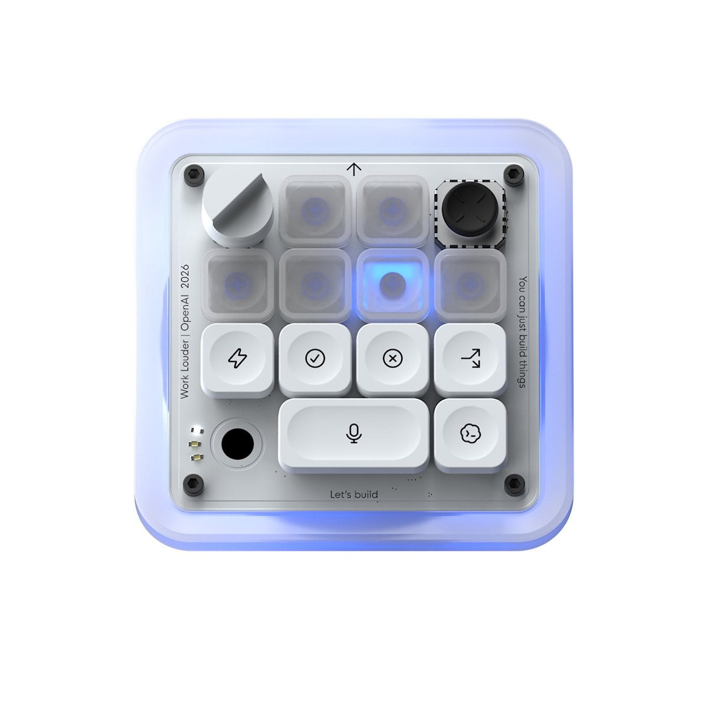
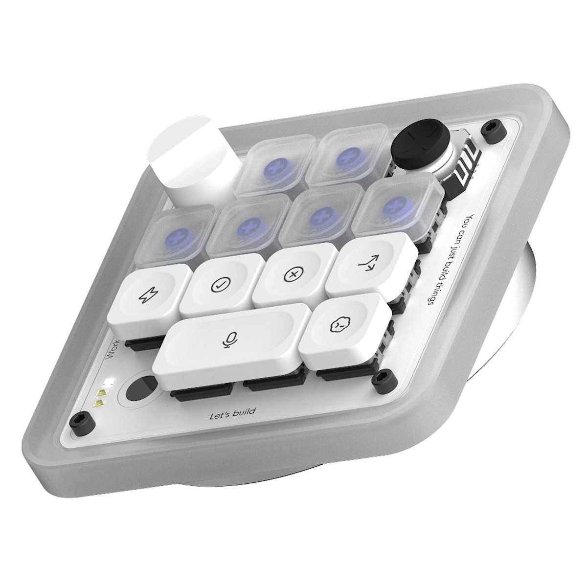
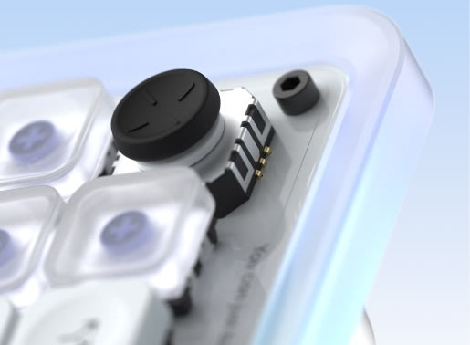

Teclas de agente
Son seis teclas en la fila de arriba. Cada una corresponde a un agente y se ilumina de un color distinto según lo que esté haciendo. Si la pulsas, se abre la conversación de ese agente.
El primer teclado pensado para dirigir agentes de inteligencia artificial.
El Codex Micro es un pequeño teclado que se coloca al lado del teclado normal del ordenador. Lo ha creado OpenAI junto al fabricante de teclados Work Louder y salió a la venta el 15 de julio de 2026. Es el primer producto físico que lanza OpenAI.
Hoy en día muchos programadores ya no escriben todo el código ellos mismos: le encargan tareas a varios agentes de inteligencia artificial a la vez y se dedican a vigilarlos, revisar lo que hacen y aceptar o rechazar sus cambios. Hasta ahora todo eso se hacía desde ventanas de chat. El Codex Micro saca ese trabajo de la pantalla y lo convierte en un panel de control físico.
Son seis teclas en la fila de arriba. Cada una corresponde a un agente y se ilumina de un color distinto según lo que esté haciendo. Si la pulsas, se abre la conversación de ese agente.
Sirven para las acciones que más se repiten: aceptar cambios, rechazarlos, abrir un chat nuevo o mantener pulsado para dar órdenes por voz.
Al girarla se cambia cuánto «piensa» el agente: menos para tareas sencillas y rápidas, más para problemas difíciles.
Permite lanzar tareas habituales, como revisar código o buscar errores, sin tener que escribirlas cada vez.
Lo he elegido porque es un ejemplo claro de cómo un dispositivo físico puede mejorar la interacción con un sistema que hasta ahora solo existía dentro de la pantalla. Además es muy reciente y antes de 2026 no existía nada parecido: ningún periférico estaba pensado para controlar agentes de inteligencia artificial.
Estos son los beneficios que aporta a la interacción persona-ordenador:
Con mirar las luces el usuario sabe qué agente está trabajando, cuál ha terminado y cuál está esperando una respuesta, sin tener que abrir ninguna ventana.
Cada acción tiene su propia tecla con un dibujo. El usuario reconoce lo que quiere hacer en vez de tener que acordarse de combinaciones de teclas.
Girar una rueda es más directo que buscar una opción en un menú. Las teclas y la rueda se notan con los dedos y, con la práctica, se usan casi sin mirar.
Antes había que saltar de una pestaña a otra para vigilar a cada agente. Ahora el usuario puede centrarse en su trabajo y solo intervenir cuando una tecla se lo indica.
Combina teclas, rueda, joystick y voz. Con la tecla de micrófono se pueden dar instrucciones largas hablando, sin escribirlas.
Las teclas están siempre en el mismo sitio y son grandes, así que se alcanzan más rápido que un botón pequeño que cambia de lugar en la pantalla.



Fotos: página oficial del Codex Micro de OpenAI y Work Louder.
El Codex Micro es el último paso de una larga historia de dispositivos de entrada. Todos han intentado lo mismo: que cueste menos decirle al ordenador lo que queremos.
| Tarea | Antes | Con Codex Micro |
|---|---|---|
| Saber cómo va cada agente | Abrir y revisar cada ventana | Mirar el color de su tecla |
| Aceptar o rechazar cambios | Buscar el botón con el ratón o recordar el atajo | Pulsar una tecla que siempre está en el mismo sitio |
| Elegir cuánto piensa la IA | Abrir un menú desplegable | Girar la rueda |
| Dar una instrucción larga | Escribirla en el chat | Mantener pulsada la tecla de micrófono y hablar |
| Lanzar tareas habituales | Escribir la misma petición cada vez | Moverse con el joystick |